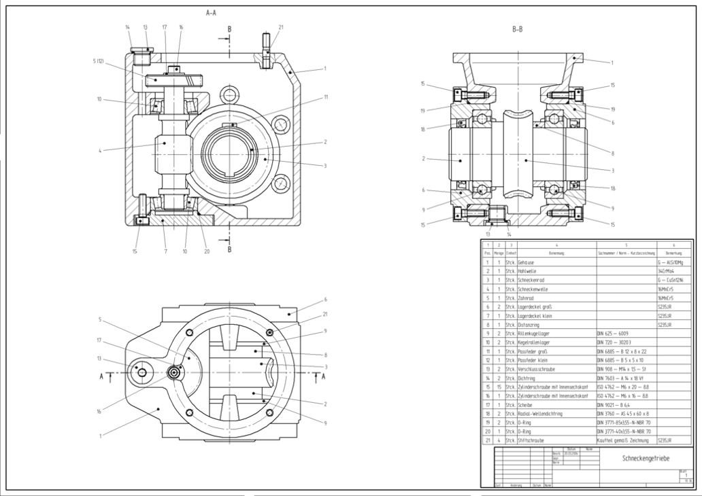
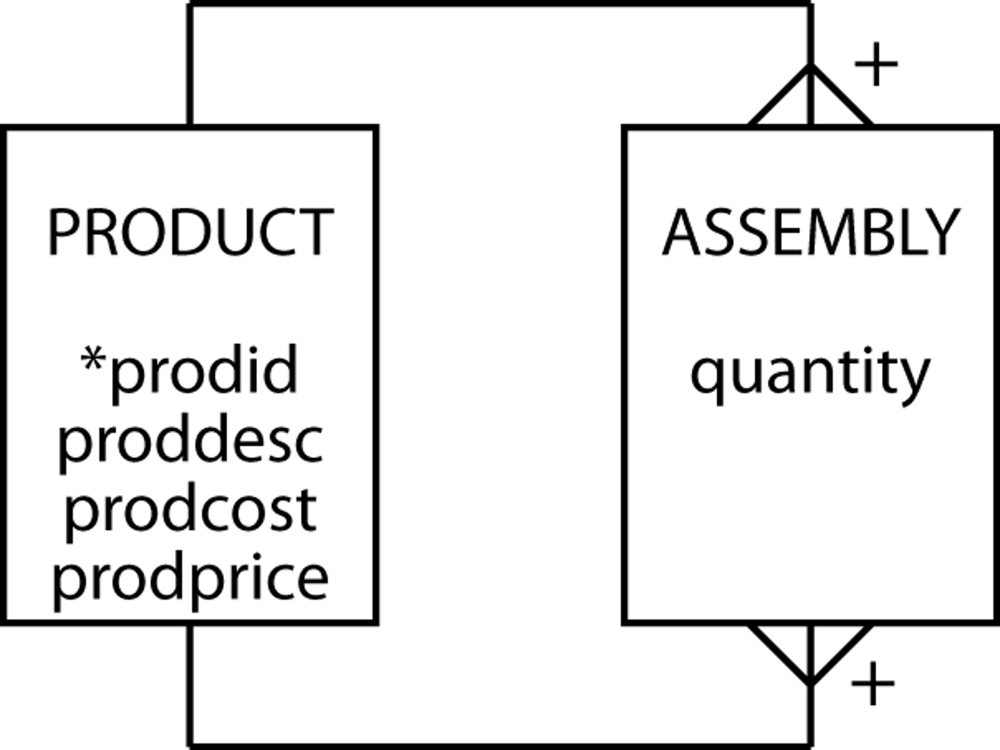
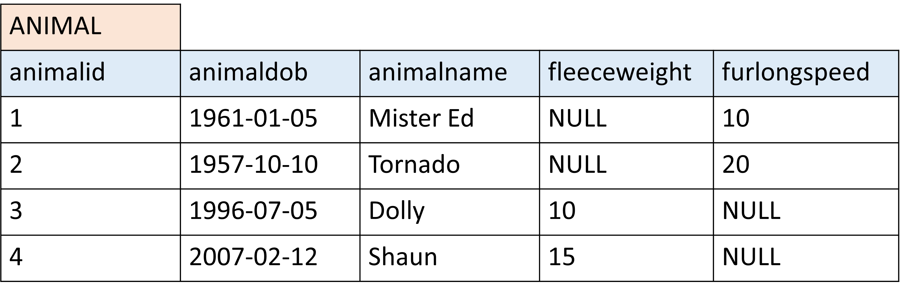
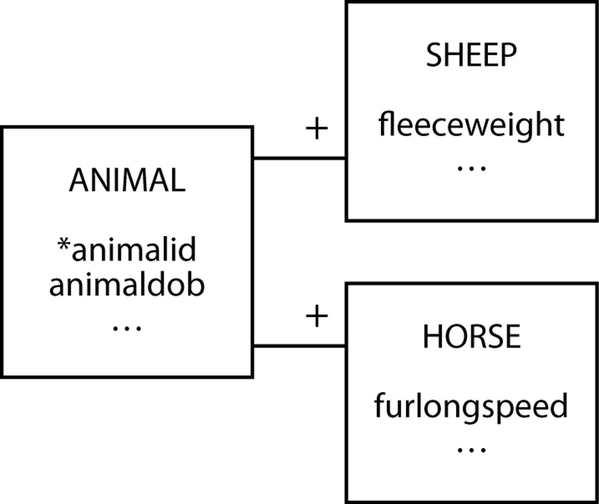

One-to-One and Recursive relationship
To try queries in this section, we will use Workbench.
You can also run them in your Python program.
Database modelling
Many-to-Many Recursive Relationship
A many-to-many recursive relationship occurs when an entity in a table has a relationship with itself. In this type of relationship, each record in the table can be associated with multiple records of the same table. This recursive structure is common when modeling hierarchical data or relationships where entities are interlinked in a complex, self-referential way.
For example, consider a company with employees, where each employee can have multiple managers, and each manager can also manage multiple employees. In this case, the relationship is between the same entity (employees), but each record can be connected to many other records of the same type.
In a relational database, this is typically represented by a table with a foreign key that references the primary key of the same table. This creates the recursive relationship, where one row can link to another row within the same table.
A common example of this is a Bill of Materials (BOM) in manufacturing. In a BOM, an item can be made up of multiple components, and those components can also be composed of other sub-components. This creates a recursive relationship where each part (or component) is related to other parts within the same table.


This allows us to model complex structures, such as corporate hierarchies, family trees, or organizational charts.
Subordinate entity
A subordinate entity refers to an entity in a database that depends on another entity (the primary entity) for its existence. The subordinate entity typically cannot exist without the primary entity and is linked by a one-to-one identifying relationship.
For example, imagine an animal entity that contains information about various animals like sheep and horses. The sheep and horse entities could both be considered subordinate to the animal entity, as they depend on it to define their shared characteristics (like species, ID, etc.).
Example:
A sheep entity might include attributes like fleeceweight (because a sheep is famous for its wool) to indicate how much wool it produces.
A horse entity might include furlongspeed (the speed at which a horse can gallop a furlong — approximately 1/8th of a mile).
Now, we typically do not collect fleece from horses. We are, most often, not interested in sheep’s speed (with some notable exceptions that are way baaayond the topic of this session…).
If we wanted to keep all these attributes in one table, we would have to deal with many NULL values.

In this case, the sheep and horse entities depend on the animal entity for classification and characteristics, but they also contain unique attributes like fleeceweight and furlongspeed to describe specific details about each species.

By modeling animals as subordinate entities, we ensure that every sheep and horse record has proper context and detailed attributes while keeping them organized under the broader animal category.
Database manipulation
REGEXP
In SQL, REGEXP (short for regular expression) is used to match a string against a pattern. It allows you to search for complex patterns in text data. It is often used to perform advanced searches, such as matching substrings, validating formats, or finding specific patterns in a column.
In your syntax, you write REGEXP in the WHERE clause instead of =.
Example:
SELECT name
FROM employees
WHERE name REGEXP '^A'; -- Finds names starting with the letter 'A'Common Regular Expression Syntax:
^ : Matches the start of a string.
$ : Matches the end of a string.
. : Matches any single character.
* : Matches 0 or more occurrences of the preceding element.
+ : Matches 1 or more occurrences of the preceding element.
[] : Matches any character within the brackets.Examples
List all brands containing ‘Hotel’ in their name.
SELECT brandName FROM brand
WHERE brandName REGEXP 'hotel';Report chains with ‘resort’ or ‘resorts’ in the chain name
SELECT chainName FROM lodgingchain
WHERE chainName REGEXP 'resort';Set operations - UNION and UNION ALL
Set operations in SQL are used to combine the results of two or more SELECT queries into a single result set. These operations allow you to perform tasks like merging data, comparing results, or finding common elements between queries.
UNION
The UNION operator combines the results of two or more SELECT queries into one result set, eliminating duplicates. It ensures that each row in the result set is unique, even if the same data appears in both queries.
SELECT column1, column2, ...
FROM table1
UNION
SELECT column1, column2, ...
FROM table2;Example
List all the hotel name, city and star rating of hotels in Dallas or hotels that have ‘Palace’ in their name.
SELECT hotelName, hotelState, hotelStarRating
FROM hotel
WHERE hotelCity = 'Dallas'
UNION
SELECT hotelName, hotelState, hotelStarRating
FROM hotel
WHERE hotelName REGEXP 'Palace';You can do the same with OR. UNION very often will return similar results.
SELECT DISTINCT hotelName, hotelStarRating, hotelCity
FROM hotel
WHERE hotelCity = 'Dallas'
OR hotelName REGEXP 'Palace';UNION ALL
UNION ALL is similar to UNION, but it does not eliminate duplicates. It will combine the results of both queries, including duplicates.
SELECT column1, column2, ...
FROM table1
UNION ALL
SELECT column1, column2, ...
FROM table2;Example
For all reviews of the hotel Id = 73242 merge room and cleanliness ratings. Rename the field as ‘Merged Reviews’.
SELECT reviewCleanliness AS 'Merged Reviews'
FROM review
WHERE hotelId = 73242
UNION ALL
SELECT reviewRooms
FROM review
WHERE hotelId = 73242;Challenge
Count the number of brands each lodging chain owns. Rename the count as Total Brands. DO NOT USE OUTER JOIN
This is how you could try to write this query with OUTER JOIN
SELECT chainName, COUNT(brandId) AS `Total Brands`
FROM lodgingchain LEFT JOIN brand USING(chainId)
GROUP BY chainName
ORDER BY COUNT(brandId);This is the solution withou OUTER JOIN
SELECT chainName, COUNT(*) AS `Total Brands`
FROM lodgingchain JOIN brand USING(chainId)
GROUP BY chainName
UNION
SELECT chainName, 0
FROM lodgingchain
WHERE chainId NOT IN (SELECT chainId FROM brand)Images and GIFs Disclaimer: Some of the images and GIFs used on this website are not owned by me. They are used for educational and illustrative purposes only. All rights belong to their respective owners. If you believe any content violates copyright, please contact me for prompt removal.